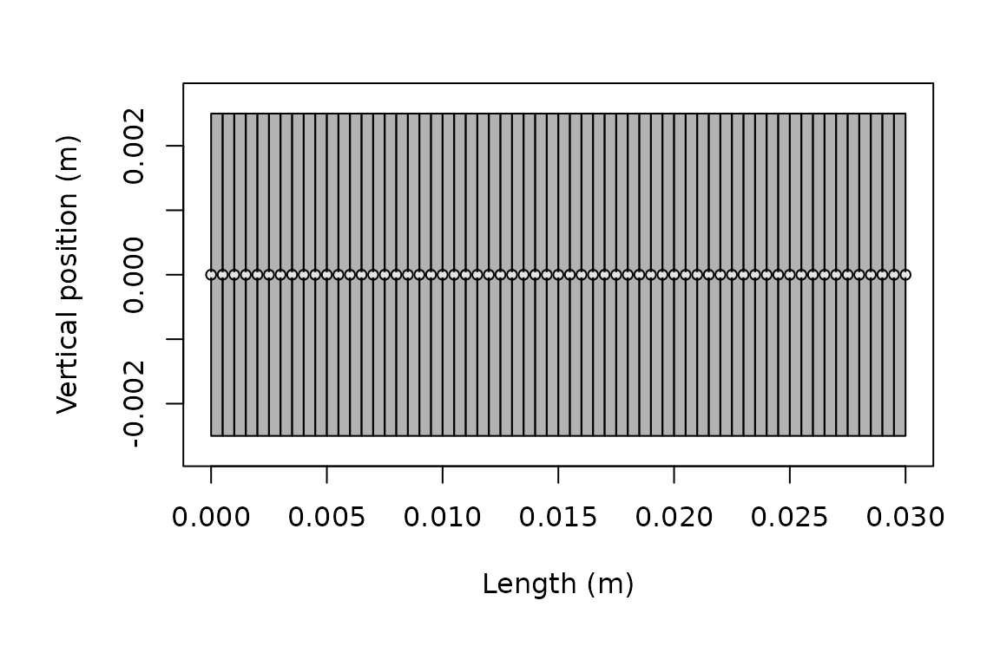

Overview
target_strength()
is the common interface for running models in acousticTS.
It combines a scatterer, a frequency vector, and one or more model
names. The function returns the scatterer with model parameters and
results attached.
This page covers execution and inspection. Use Choosing a Model for geometry, boundary, and validity considerations. Consult the model’s theory and implementation pages for its assumptions and numerical controls.
Successful execution confirms that the supplied inputs passed the implemented checks. It does not establish that the model is appropriate or validated for the target and parameter range. Review Validation and Benchmarks before using a model outside its documented scope.
Available models
available_models()
lists built-in and user-registered models, their accepted aliases,
result names, and source:
Model names are case-insensitive. An alias and its canonical name resolve to the same registered model. Availability does not imply compatibility with every scatterer or shape.
Run one model
Build the scatterer first, then supply frequencies in hertz and a model name:
library(acousticTS)
shape_obj <- cylinder(
length_body = 0.03,
radius_body = 0.0025,
n_segments = 60
)
scatterer_obj <- fls_generate(
shape = shape_obj,
density_body = 1045,
sound_speed_body = 1520,
theta_body = pi / 2,
ID = "example cylinder"
)
frequency <- seq(38e3, 120e3, by = 6e3)
scatterer_obj <- target_strength(
object = scatterer_obj,
frequency = frequency,
model = "dwba"
)Reassignment is required. target_strength() returns an
updated S4 object. It does not modify the object bound to
scatterer_obj unless the returned value is assigned.
The function performs two stages for each model. The initializer
converts the scatterer and call arguments into the model-specific
parameterization. The solver then calculates and stores the result. Use
show() for a compact object summary, then inspect the two
result slots with extract():
show(scatterer_obj)## FLS-object
## Fluid-like scatterer
## ID:example cylinder
## Body dimensions:
## Length:0.03 m(n = 60 cylinders)
## Mean radius:0.0025 m
## Max radius:0.0025 m
## Shape parameters:
## Defined shape:Cylinder
## L/a ratio:12
## Taper order:N/A
## Material properties:
## Density: 1045 kg m^-3 | Sound speed: 1520 m s^-1
## Body orientation (relative to transducer face/axis):1.571 radians## [1] "DWBA"## [1] "DWBA"## [1] "frequency" "ka" "f_bs" "sigma_bs" "TS"
head(dwba_output)## frequency ka f_bs sigma_bs TS
## 1 38000 0.3979351 -6.723778e-05-1.940150e-20i 4.520919e-09 -83.44773
## 2 44000 0.4607669 -8.773690e-05-2.931388e-20i 7.697764e-09 -81.13635
## 3 50000 0.5235988 -1.097965e-04-4.168663e-20i 1.205527e-08 -79.18823
## 4 56000 0.5864306 -1.328846e-04-5.650686e-20i 1.765833e-08 -77.53050
## 5 62000 0.6492625 -1.564363e-04-7.364911e-20i 2.447231e-08 -76.11325
## 6 68000 0.7120943 -1.798640e-04-9.287346e-20i 3.235107e-08 -74.90111Output fields vary by model. Inspect their names before assuming that every result contains the same amplitude, cross-section, acoustic-size, or diagnostic columns.
Model-specific arguments
Arguments after model are forwarded to the selected
model initializer. Their meaning is model-specific. Examples include
boundary conditions, medium properties, approximation methods,
integration settings, and stochastic controls. Use the model reference
page to determine which are required.
target_strength(
object = sphere_obj,
frequency = frequency,
model = "sphms",
boundary = "gas_filled"
)
target_strength(
object = fls_obj,
frequency = frequency,
model = "hpa",
method = "stanton"
)verbose = TRUE prints model initialization and execution
progress. It is useful for locating the stage at which a larger call
fails:
target_strength(
object = scatterer_obj,
frequency = frequency,
model = "dwba",
verbose = TRUE
)Run several models
A vector of model names runs the requested models sequentially on the same scatterer:
comparison_obj <- fls_generate(
shape = shape_obj,
density_body = 1045,
sound_speed_body = 1520,
theta_body = pi / 2
)
comparison_obj <- target_strength(
object = comparison_obj,
frequency = frequency,
model = c("dwba", "hpa")
)
names(extract(comparison_obj, "model"))## [1] "DWBA" "HPA"This keeps geometry, material properties, and frequency fixed while different model formulations are evaluated. It does not make the models physically equivalent. Compare only outputs with compatible definitions and domains.
Shared and per-model arguments
Arguments supplied through ... are shared with the
requested model initializers when relevant. Use model_args
for arguments that belong to one model. A model-specific value overrides
a shared value with the same name:
comparison_obj <- target_strength(
object = scatterer_obj,
frequency = frequency,
model = c("dwba", "sdwba"),
density_sw = 1026,
sound_speed_sw = 1478,
model_args = list(
sdwba = list(
n_iterations = 100,
n_segments_init = 14,
phase_sd_init = sqrt(2) / 2,
length_init = 38.35e-3,
frequency_init = 120e3
)
)
)Each model_args name must identify a requested model.
Each entry must be a named list or named atomic vector.
Plot and inspect results
The returned object retains its target definition and the stored
model output. plot() can
display either:
plot(scatterer_obj, type = "shape")
Geometry stored on the modeled scatterer.
plot(scatterer_obj, type = "model")Model output stored on the same scatterer.
For quantitative work, extract the underlying result rather than reading values from a plot. Target strength is appropriate for logarithmic reporting. Cross-section or complex amplitude may be required for linear averaging, coherent combination, or mechanism-level analysis. Before comparison or export, confirm the shape and orientation, requested model, frequency grid, and output columns.
When to run again
Treat each stored result as belonging to one run configuration. Run the model again after changing:
- geometry, segmentation, or component placement
- material properties, contrasts, or orientation
- frequency or other acoustic conditions
- model name, boundary condition, method, or numerical controls
Create curved targets with brake() before
running the relevant model.
Execution checks
Before interpreting a result, confirm:
- the scatterer class and shape are supported by the model
- frequencies are in hertz and use the intended grid
- medium and target properties use consistent units and definitions
- model-specific arguments represent the intended physical and numerical case
- results are stable under relevant resolution or truncation changes
- compared models use the same target, conditions, and reporting quantity
Continue with Comparing Models or Simulation and Parameter Sweeps.